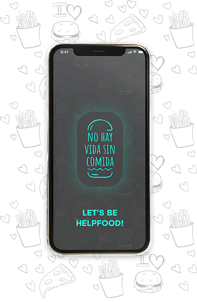
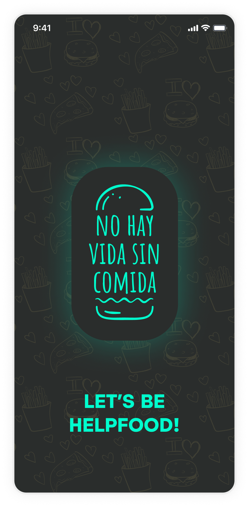
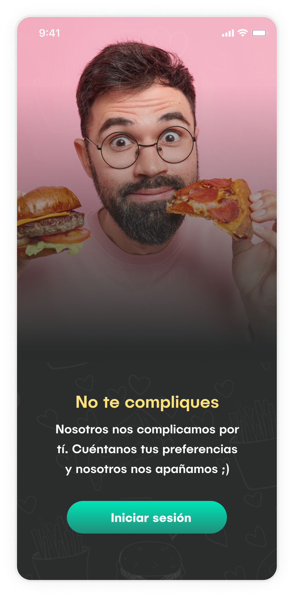
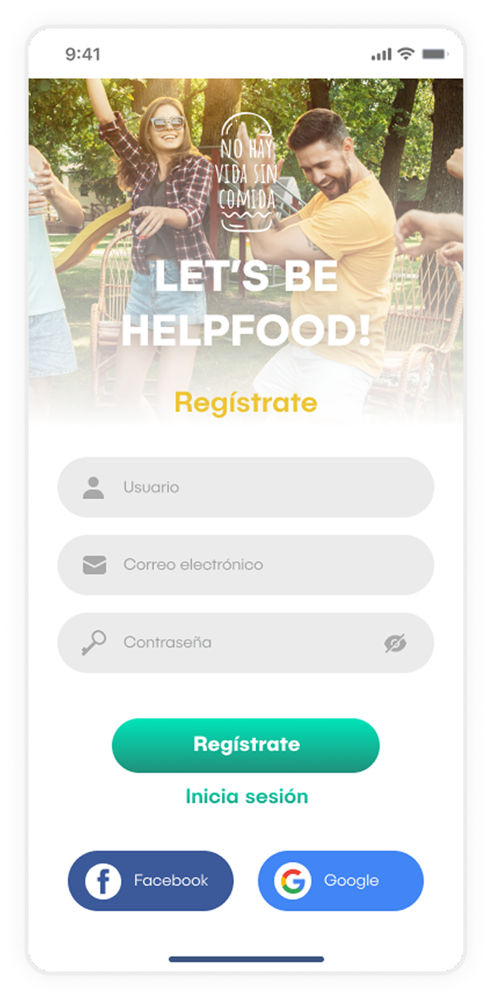
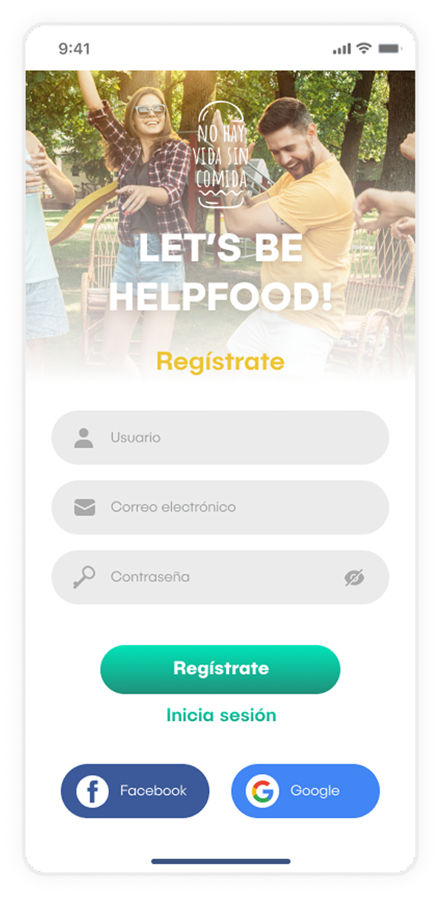
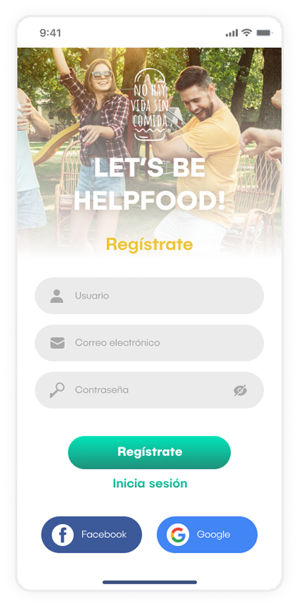
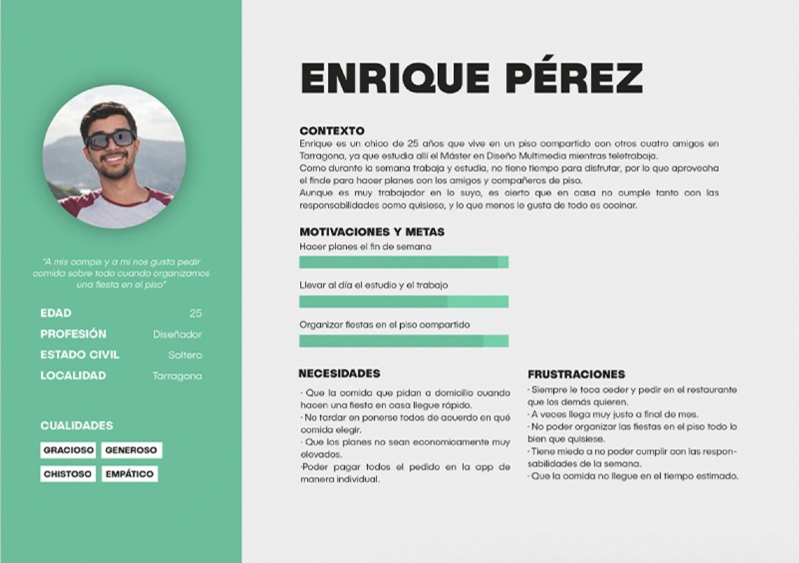
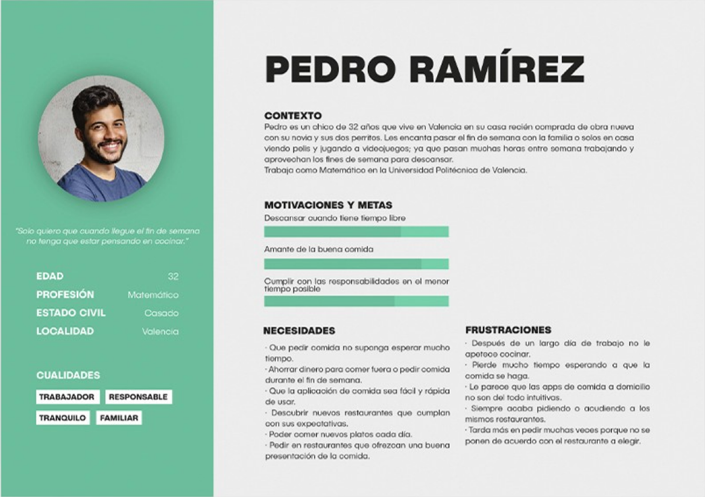
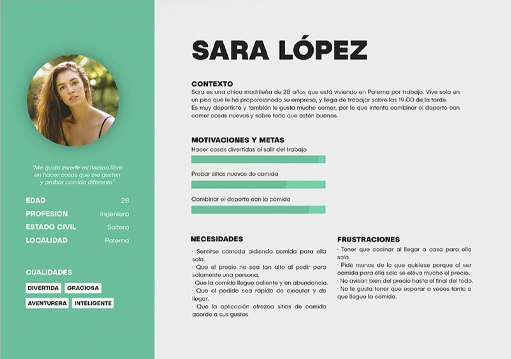

No life without food
Multimedia
Motion
Photography
Brand
This user-centered design (UCD) project focuses on the UX/UI design of a food delivery app, built around the idea that it's a pleasure having good food whenever you prefer. The goal was to create an intuitive, engaging and seamless experience that met users' real needs and habits when ordering food online.



 




Visual Highlights
What do we want to solve?
I wanted to create an app that adapts in a novel way to each users' individual preferences and needs, offering them an unique and innovative gastronomic experience like never before.
Investigation
- Desk Research
- Benchmarking
- Surveys
Definition
- Personas
 Scenarios
Scenarios- User Journeys
- Lean UX Canva
Design
- Card Sorting
- Treemap
- Sketching
- Wireframe
- Prototype
Evaluation
- Heuristic Evaluation
 User testing
User testing- User analytics
Users Journey


